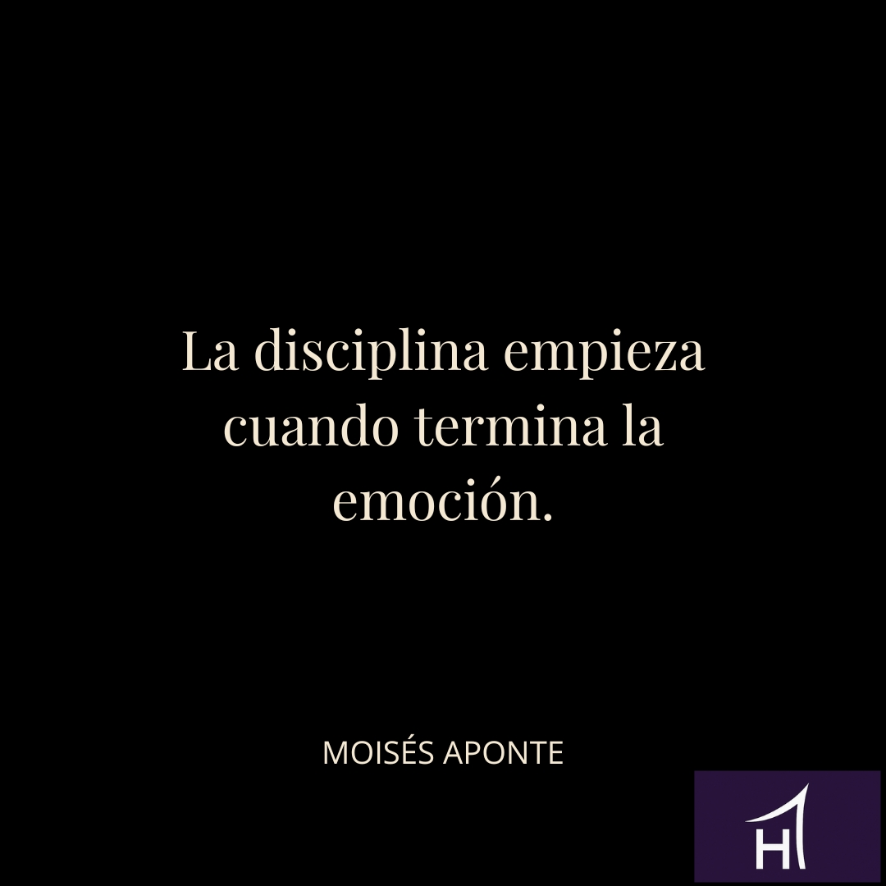

La mayoría de las personas confunden avance con emoción. Creen que están progresando porque sienten entusiasmo o motivación. Pero la emoción es inestable. No sostiene nada a largo plazo.
La emoción acompaña.
La disciplina construye.
La disciplina aparece cuando la emoción desaparece. Cuando ya no te provoca. Cuando la comodidad se agota y la mente empieza a ofrecer razones lógicas para detenerte. Ese momento define quién eres.
No los días buenos.
No la inspiración.
No los golpes de suerte.
Sino el punto exacto en el que la emoción ya no existe y tú sigues teniendo una decisión frente a ti.
La trampa adulta de esperar ganas
Esperar sentirte bien para actuar es una de las formas más comunes de autoengaño adulto. Confundes intención con transformación. Entusiasmo con estructura. Movimiento emocional con progreso real.
Actuar solo cuando estás motivado no es disciplina.
Es dependencia emocional.
Y la dependencia emocional produce ciclos previsibles:
- Empiezas fuerte.
- Te agotas rápido.
- Regresas al punto de partida.
La disciplina empieza cuando la emoción termina. Ahí tu cuerpo protesta, tu mente negocia y tú decides si eres alguien que se cumple o alguien que fabrica excusas aceptables.
Ese instante es incómodo.
Pero es el único que construye carácter.
Ejemplo práctico
Piensa en alguien que decide caminar cada mañana para recuperar estructura.
Los primeros días son fáciles:
- Hay novedad.
- Hay energía.
- Hay sensación de control.
Pero al cuarto día aparece la realidad: cansancio, falta de ganas y la idea de que hoy no pasa nada si descansa. La mente ofrece argumentos razonables.
> «Cinco minutos más.»
> «Hoy tengo demasiado trabajo.»
> «Mañana vuelvo.»
Ese instante es el núcleo de su vida adulta.
No es la caminata.
Es la decisión en ausencia de emoción.
Ahí se define si está construyendo un hábito o un relato.
Si se fortalece o se diluye.
Si crece o se autoengaña.
Lo que realmente se está construyendo
La disciplina no nace en la motivación.
Nace cuando no hay nada que te empuje, excepto tu palabra.
Cada vez que cumples sin ganas:
- Refuerzas identidad.
- Ganas respeto propio.
- Reduces la negociación interna.
Cada vez que cedes:
- Entrenas la excusa.
- Debilitas la estructura.
- Aplazas el crecimiento.
Bloque de reflexión
**Pregunta para reflexionar:**
¿Qué sueles hacer cuando la emoción desaparece: cumplir o justificarte?
Conclusión
La disciplina no se siente bien al principio.
No está diseñada para agradarte, sino para sostenerte.
Cuando la emoción termina, la vida adulta empieza.
Ahí no se construye un hábito.
Se construye una identidad.
